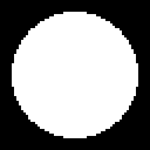
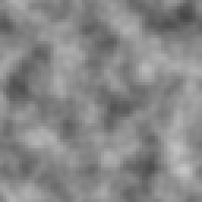
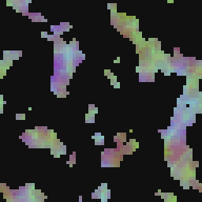

Three small utilities for moving information between the alpha channel and the color channels, or between one image and another's channels. None of them draw anything on their own: they read an input, or several, and rearrange what is already there.
Alpha and RGBA Split both read one input and pull one piece of information out of it. RGBA Merge is the odd one out, reading up to four and building an image from their luminance instead of their alpha, the node that turns four separate grayscale masks into one image with meaning packed into every channel.

Extracts, writes or removes transparency, using the second input as a mask.
Five ways to read, write or strip transparency, off a second Mask input for the modes that need one. Extract, the default, copies the alpha channel into RGB as a gray-on-white readout, useful for eyeballing a shape's silhouette without a separate RGBA Split.
Set replaces the alpha with the Mask input's own luminance, weighted by that mask's own alpha, the same convention Blend's Opacity input and Paint's mask both use: a soft white stamp writes a soft edge into alpha rather than a hard cutout. Opaque forces every pixel's alpha to 255, the quick fix for a texture whose source had unwanted transparency baked in from an earlier filter. Premultiply and Unpremultiply convert between straight and premultiplied alpha, the two conventions image formats disagree about; reach for these only if a downstream tool or export is reading the color of a half-transparent pixel wrong, since most of this engine's own math already assumes straight alpha.
With no Mask wired, Set leaves the alpha untouched rather than erroring.
In: In (image), Mask (image) · Out: image
Parameters

Pulls one channel out -- red, green, blue, alpha or luminance -- as gray.
Pulls one channel out as a flat grayscale image: Red, Green, Blue, Alpha, or Luminance, a weighted read of all three color channels rather than a raw one. It is the node to reach for when a downstream filter (Levels, Curve, Threshold) needs to read or reshape one channel in isolation rather than all three together.
Alpha here reads the same information Alpha's own Extract mode does, so the two are interchangeable for that one job; RGBA Split is the one to use if you also want Red, Green, Blue or Luminance out of the same input without switching modes on a different node. Luminance is the closest reading to what a human eye judges as brightness, and the one I reach for ahead of a Threshold or a Quantize when the source is a full-color texture rather than something already grayscale.
The output is always written back across all three color channels at full alpha, so it composites like any other opaque grayscale image rather than staying a single-channel value.
In: In (image) · Out: image
Parameters

Assembles an image taking each channel from the luminance of one input.
Builds one image from up to four separate ones, each input's luminance landing in one channel: R into red, G into green, B into blue, A into alpha. It is the direct inverse of RGBA Split, and the pair is how this engine does channel packing: four independent grayscale masks or height maps go in, one packed texture comes out, ready to export as a single file instead of four.
Any input left unplugged reads as 0 for R, G or B, and as fully opaque (255) for A, so a Merge with only two of the four wired still produces something sane rather than an empty buffer: two channels carrying real data, the third dark, full opacity. There are no parameters to set; the whole node is its four wires.
I use this at the end of a graph that built a normal map's X and Y separately from two different Formula nodes, or to pack a roughness and a metalness mask into two channels of one export instead of two separate grayscale files.
In: R (image), G (image), B (image), A (image) · Out: image